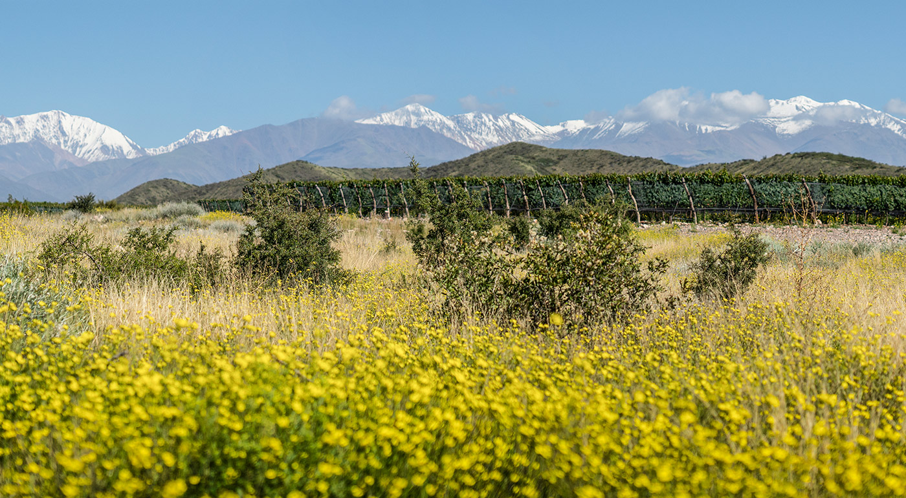
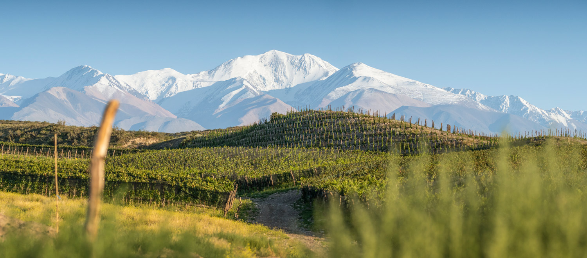
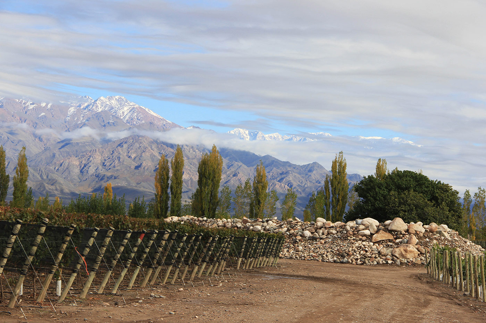

FINCA LAS CERRILLADAS
Ubicada al pie de las Lomas del Jaboncillo, únicas cerrilladas elevadas dentro del Valle de Uco. Este viñedo expresa la diversidad y riqueza del terruño de Gualtallary. El diseño de cada una de sus parcelas es el resultado de años de trabajo de interpretación del viñedo, y de la investigación y desarrollo de nuestro equipo. En sus suelos aluviales del Río Las Tunas encontramos diferentes materiales calcáreos, como gravas y caliches, que son expresados con transparencia por las vides de Malbec, Cabernet Franc y Chardonnay.
FINCA AGUA DE LAS JARRILAS
Esta finca toma su nombre del arroyo que baja de las Lomas del Jaboncillo hacia las Lomas del Peral y representa el perfecto equilibrio entre paisaje y viñedo. Con sus hileras de vid integradas entre extensos cañadones de vegetación nativa, y con su rico relieve de quebradas y cerrillos, cada parcela muestra una identidad única, reflejo de la riqueza de Gualtallary.
FINCA CANAL UCO
Ubicada sobre tierras con más de 80 años de historia de agricultura y riego con aguas del Canal Uco, en la parte Norte de Paraje Altamira. Esta finca fue el punto fundacional del desarrollo de Zuccardi en el Valle de Uco. Sus suelos son ligeramente más profundos que los de Piedra Infinita, pero sin perder las características que son comunes a esta región.